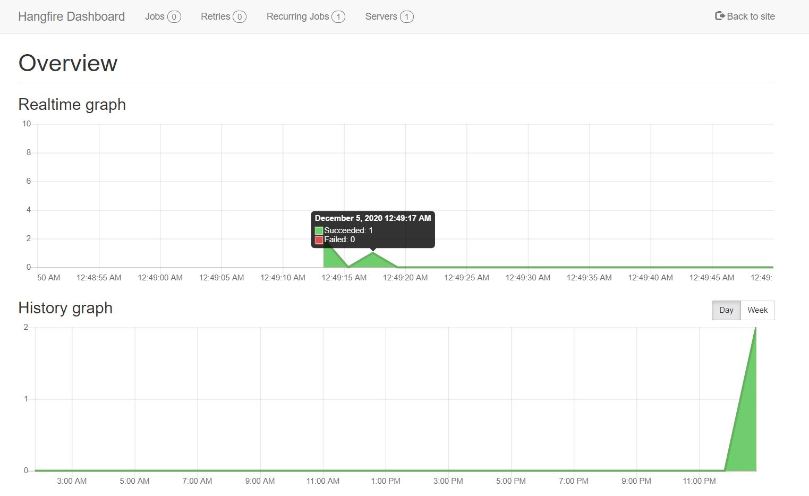

Note: This post is part of C# Advent Calendar 2020.
Sometimes you've tasks that would take too much time to do in the request-response model. For example sending multiple emails. So you have to send the emails asynchronously (i.e. in the background) and returning a response before the jobs are done. Or maybe you want to do some task periodically. For example generating a resource-intensive report at midnight or sending monthly invoices to customers. In short, you want to be able to schedule jobs and be able to track their progress and see their results.
You can of course use an in-memory model and use ASP.NET Core's IHostedService. But then if the application restarts all of the scheduled jobs would be gone. So you need to persist the jobs so that they are not lost. And Maybe you want to have multiple workers (consumers) processing the background jobs and the works might be on different machines. And what about retrying jobs when they fail?
Hangfire is a library that helps you do all of that and more very easily. It's very popular and well tested. It's also customizable and supports different kinds of storage mechanisms. And it supports different styles and techniques of background job processing.
How to use Hangfire
We are going to host hangfire in an ASP.NET Core app and use SQLite for storage. You can also use MSSQL, PostgreSQL, MySQL and other database engines and host it in a console app. The official guide is very good but here are the steps:
Add these Nuget packages*:
<PackageReference Include="Hangfire.Core" Version="1.7.18" /> <PackageReference Include="Hangfire.AspNetCore" Version="1.7.18" /> <PackageReference Include="Hangfire.Storage.SQLite" Version="0.2.4" />Add Hangfire to Dependency Container:
// Add Hangfire services. services.AddHangfire(configuration => configuration .SetDataCompatibilityLevel(CompatibilityLevel.Version_170) .UseSimpleAssemblyNameTypeSerializer() .UseRecommendedSerializerSettings() .UseSQLiteStorage()); // Add the processing server as IHostedService services.AddHangfireServer();Define Hangfire Dashboard route:
app.UseEndpoints(endpoints => { endpoints.MapRazorPages(); endpoints.MapHangfireDashboard(); });
Now you can run the app and go to /hangfire and see it. But there are no jobs yet.
Enqueuing Jobs
If you want to enqueue a job in a fire-and-forget fashion (i.e. you don't want to wait for the result and you don't care much about when exactly it's going to happen), you do something like this:
backgroundJobs.Enqueue(() => Console.WriteLine("Hello world from Hangfire!"));
What if you wanted to something that might require some dependencies. For example you need a connection to the database or access to configurations? Well, then you can create a class for the job and get your dependencies through Dependency Injection:
public class SendEmailsJob
{
public SendEmailsJob(IConfiguration configuration)
{
// You can ask for configuration or any other
// dependency the job might need via Dependency Injection
}
[JobDisplayName("Send {0} emails")]
[AutomaticRetry(Attempts = 3)]
public async Task Execute(int count)
{
for (int i = 0; i < count; i++)
{
await Task.Delay(1000);
}
}
}
As you can see we have defined a method called Execute which accepts a parameter. We have also decorated it with some attributes to control how it's displayed in the Hangfire dashboard or how many times Hangfire would automatically retry the job if it fails.
And this is how you'd enqueue the job:
_backgroundJobClient.Enqueue<SendEmailsJob>(job => job.Execute(5));
Scheduling Jobs
If you want a job to be executed periodically on a defined schedule, you can write something like this:
Hangfire.RecurringJob.AddOrUpdate<SendEmailsJob>(job => job.Execute(10), cronExpression: "*/5 * * * *");
Note: RecurringJob is a static class.
The job can be a simple expression or a class. And you define the schedule using a Cron Expression. You can construct Cron expressions through sites like this and this.

Extensions
Hangfire has a lot of extensions, you can check them out here. But my favorite extension is this one. Which lets you output real time logs :)

Note: The console is not real-time if you use SQLite as the storage engine.
Source code
I have put a sample application here which contains the codes in this article and the rest of the ASP.NET Core app.
comments powered by Disqus